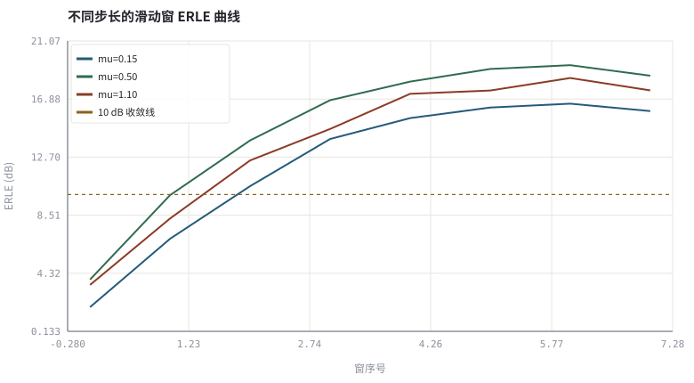
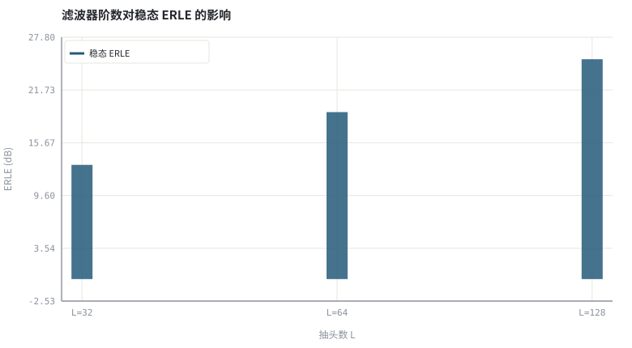

第 10 章用 NLMS 实现一个可验证的 AEC
把步长、阶数、正则、冻结条件全部摊开，让每个 ERLE 数字都能复算。
本章位置：第 05 章 · 自适应滤波：LMS、NLMS 与收敛 给出 NLMS 更新式、第 09 章 · AEC 总体结构：参考信号、线性滤波与残余抑制 给出 AEC 结构，本章把两者合成为可复算的实现；第 11 章 · 残余回声抑制与 WebRTC AEC3 结构 处理它消不掉的非线性残余，第 18 章 · 上卷综合实验：完整传统 3A 链路与评测 把 ERLE 放进完整评测。
这章就是给 第 05 章 · 自适应滤波：LMS、NLMS 与收敛 的在线 SGD 加了一套单元测试：滑动 ERLE 是训练曲线、权重误差是参数回归测试、阶数扫描是容量不足的消融实验、双讲冻结是 label 清洗。四条都过，才敢说 AEC『收敛了』。
- 能实现一个逐样本 NLMS 回声消除器并画出滑动 ERLE 曲线。
- 能量化步长 μ、阶数 L、正则 δ 对收敛速度与稳态 ERLE 的影响。
- 能说明双讲冻结与滤波器阶数不足各自的失效表现。
- 能运行实验，用收敛迭代数、权重误差与稳态 ERLE 交叉验证。
§知识点地图
每个知识点都配了 1～2 个扩展学习链接；本章完整资源清单见 扩展学习。
| # | 知识点 | 扩展学习 | 状态 |
|---|---|---|---|
| 1 | 逐样本 NLMS | Least mean squares filter ↗ · speexdsp 源码 ↗ | 正文已覆盖 |
| 2 | 滑动窗 ERLE | Short-time Fourier transform ↗ · The Scientist and Engineer's Guide to DSP ↗ | 正文已覆盖 |
| 3 | 收敛迭代数 | Least mean squares filter ↗ · NumPy 文档 ↗ | 正文已覆盖 |
| 4 | 稳态失调 | Least mean squares filter ↗ · speexdsp 源码 ↗ | 正文已覆盖 |
| 5 | 步长扫描 | Least mean squares filter ↗ · speexdsp 源码 ↗ | 正文已覆盖 |
| 6 | 阶数不足与欠建模 | Least mean squares filter ↗ · speexdsp 源码 ↗ | 正文已覆盖 |
| 7 | 正则 δ | Least mean squares filter ↗ · speexdsp 源码 ↗ | 正文已覆盖 |
| 8 | 双讲冻结上界 | ITU-T G.168 ↗ · Microsoft AEC Challenge ↗ | 正文已覆盖 |
§10.1最小可用实现只有五行
x⃗[n] = (x[n], x[n−1], …, x[n−L+1]) ，ŷ[n] = wᵀx⃗[n] ，e[n] = y[n] − ŷ[n]
w ← w + μ·e[n]·x⃗[n] / (x⃗[n]ᵀx⃗[n] + δ) ，0 < μ < 2
AEC 与 第 05 章 · 自适应滤波：LMS、NLMS 与收敛 的系统辨识只差一件事：观测里多了近端语音 d[n] 和环境噪声。因此工程实现必须补三样东西：时延对齐（第 01 章 · 声学链路与信号模型：房间、麦克风与回声路径）、双讲冻结（第 07 章 · 双讲检测、时延漂移与路径突变）、输出残差的可听核对。本实验用已知双讲区间作为检测上界，把注意力集中在 μ / L / δ 上。
| 参数 | 影响 | 调小的后果 | 调大的后果 |
|---|---|---|---|
| μ 步长 | 收敛速度 / 稳态失调 | 收敛慢，路径突变追不上 | 收敛快但稳态 ERLE 低、易发散 |
| L 阶数 | 能覆盖的混响尾 | 欠建模，残余回声压不下去 | 算力线性增长、收敛变慢 |
| δ 正则 | 静音段数值稳定 | 输入能量趋零时步长爆炸 | 等效缩小 μ，收敛变慢 |
§10.2怎样算『可验证』
- 滑动窗 ERLE：每 256 样本算一次 10log₁₀(Σe²_echo/Σe²_res)，曲线拐点就是收敛时刻，比只报一个全局数更可核对。
- 权重误差：‖w−h‖ 直接检查辨识的是真实路径，而不是碰巧拟合了当前样本。
- 阶数扫描：真值 h 有 128 抽头，L=32 时稳态 ERLE 应明显偏低，这是欠建模（under-modeling）而非算法不收敛。
- 双讲段：单独报一段 segSNR / SI-SDR，防止『整体 ERLE 高但近端被压掉』。
ERLE 只在单讲区间统计。把双讲段的近端语音算进分子分母，会得到虚高或虚低的数字，这是 第 03 章 · 怎么算「变好了」：客观指标、尺度与主观听测 反复强调的评测陷阱。
§Python 实验
实验 10-1 · NLMS AEC 的步长扫描、阶数扫描与收敛核对
#!/usr/bin/env python3
# -*- coding: utf-8 -*-
"""实现带双讲冻结的逐样本 NLMS，扫描三个步长与三个阶数，打印滑动 ERLE、收敛迭代数、权重误差与稳态 ERLE。
全部语音 / 噪声 / 房间冲激响应均为代码合成信号，仅用于教学演示机制与量级。
"""
from __future__ import annotations
import math
import pathlib
import random
import statistics
import sys
import time
_here = pathlib.Path(__file__).resolve()
for _p in _here.parents:
if (_p / "tools" / "dsp.py").exists():
sys.path.insert(0, str(_p / "tools"))
break
from dsp import (SAMPLE_RATE, fft, hann, stft, istft, magnitude_db, spectrum,
white_noise, tone, chirp, synthetic_speech, rir, convolve,
fft_convolve, delay, clip, normalize_peak, rms, rolling_rms,
smooth, db, energy_db, snr_db, erle_db, seg_snr_db,
scale_align, si_sdr_db, lufs_approx,
write_wav, read_wav, wav_info)
from chart import Chart, heatmap, BLUE, RED, GREEN, AMBER
FIG = _here.parents[1] / "fig"
AUDIO = _here.parents[1] / "audio"
FIG.mkdir(exist_ok=True)
AUDIO.mkdir(exist_ok=True)
random.seed(7)
# ---- 参数区 ----
N, L = 3072, 64
MUS = (0.15, 0.50, 1.10) # 步长扫描
LENS = (32, 64, 128) # 阶数扫描
DELTA = 1e-3 # 正则项
DT_START = int(0.70 * N) # 双讲起点（理想检测上界）
H_WIN = 256 # 滑动 ERLE 窗长
# ---- 计算与作图 ----
rng = random.Random(7)
sp = synthetic_speech(rng, N)
far = [0.78 * a + 0.22 * b for a, b in zip(sp, white_noise(rng, N, 0.18))]
h = rir(rng, 128, decay=0.006, direct_delay=20)
echo = fft_convolve(far, h)[:N]
near_raw = synthetic_speech(rng, N)
near = [0.65 * near_raw[i] if i >= DT_START else 0.0 for i in range(N)]
noise = white_noise(rng, N, 0.004)
mic = [echo[i] + near[i] + noise[i] for i in range(N)]
def run_nlms(mu, length):
w = [0.0] * length
err = [0.0] * N
for n in range(length, N):
xv = [far[n - i] for i in range(length)]
y = sum(w[i] * xv[i] for i in range(length))
e = mic[n] - y
err[n] = e
if n < DT_START:
p = sum(v * v for v in xv) + DELTA
for i in range(length):
w[i] += mu * e * xv[i] / p
curve = []
for s in range(length, DT_START - H_WIN, H_WIN):
curve.append(erle_db(echo[s:s + H_WIN], err[s:s + H_WIN]))
werr = math.sqrt(sum((w[i] - h[i]) ** 2 for i in range(length)))
steady = erle_db(echo[N // 2:DT_START], err[N // 2:DT_START])
return curve, steady, werr, err
curves, steadies, werrs = [], [], []
best_err = None
for mu in MUS:
cv, st, we, err = run_nlms(mu, L)
curves.append(cv)
steadies.append(st)
werrs.append(we)
if mu == 0.50:
best_err = err
len_steadies = []
for ln in LENS:
_cv, st, _we, _err = run_nlms(0.50, ln)
len_steadies.append(st)
c = Chart(FIG / "10-learning.svg", "不同步长的滑动窗 ERLE 曲线", xlabel="窗序号", ylabel="ERLE (dB)")
for mu, cv, col in zip(MUS, curves, (BLUE, GREEN, RED)):
c.line(range(len(cv)), cv, col, label="mu=%.2f" % mu)
c.hline(10.0, AMBER, label="10 dB 收敛线")
print("学习图:", c.save())
d = Chart(FIG / "10-erle-lens.svg", "滤波器阶数对稳态 ERLE 的影响", xlabel="抽头数 L", ylabel="ERLE (dB)",
xticks=[(i, "L=%d" % ln) for i, ln in enumerate(LENS)])
d.bars(range(len(LENS)), len_steadies, BLUE, label="稳态 ERLE")
print("阶数图:", d.save())
write_wav(AUDIO / "10-mic.wav", normalize_peak(mic))
write_wav(AUDIO / "10-echo.wav", normalize_peak(echo))
write_wav(AUDIO / "10-error.wav", normalize_peak(best_err))
print("采样率=%d Hz 样本=%d 真值h=128抽头 双讲起点=%d 冻结=是 真值延迟=20" %
(SAMPLE_RATE, N, DT_START))
for mu, st, we, cv in zip(MUS, steadies, werrs, curves):
hit = next((i + 1 for i, v in enumerate(cv) if v >= 10.0), -1)
print("mu=%.2f 稳态ERLE=%.2f dB 权重误差=%.4f 首次10dB窗=%d 约=%d样本" %
(mu, st, we, hit, L + hit * H_WIN if hit > 0 else -1))
print("阶数扫描 稳态ERLE: " + " ".join("L=%d→%.2fdB" % (ln, s)
for ln, s in zip(LENS, len_steadies)))
print("双讲段 segSNR=%.2f dB SI-SDR=%.2f dB" %
(seg_snr_db(near[DT_START:], best_err[DT_START:]),
si_sdr_db(best_err[DT_START:], near[DT_START:])))操作：对照三条学习曲线与 10 dB 线；看阶数扫描里 L=32 的 ERLE 缺口；试听 10-echo.wav 与 10-error.wav。 预期与判读：本例三个步长的「首次 10 dB 窗」都是第 3 窗，μ=0.50 反而同时拿到最高稳态 ERLE（19.19 dB）与最小权重误差；μ=1.10 已越过最优值开始变差——步长与性能不是单调关系，必须扫描。阶数扫描则很干净：L=32 欠建模 13.13 dB，L=128 覆盖真值长度后达到 25.27 dB。
改参数看趋势：把 DELTA 调到 1e-6，静音段会出现数值抖动；把 DT_START 之后的冻结去掉，双讲段 SI-SDR 会明显下降。 文件位置：part2/10-nlms-aec/code/10-nlms-aec.py


10-mic.wav
含回声与后段双讲的麦克风信号（16 kHz / 16-bit 单声道，代码合成信号，不是真实录音）
10-echo.wav
真实回声分量（核对参考）（16 kHz / 16-bit 单声道，代码合成信号，不是真实录音）
10-error.wav
mu=0.50 的 NLMS 输出残差（16 kHz / 16-bit 单声道，代码合成信号，不是真实录音）
代码块右上角可一键复制；仓库里的 code/*.py 由 tools/extract_code.py 从这些代码块自动抽取。脚本只用标准库、固定 random.seed(7)，运行后写出 fig/*.svg 与 audio/*.wav；批量运行用 ./tools/run_python.sh。
§可选真机命令片段
以下命令不参与批量运行，需要本机自行安装对应工具。滤镜是否可用取决于本机 ffmpeg 版本与编译选项，请先用 ffmpeg -filters / ffmpeg -version 自查，并以 https://ffmpeg.org/ffmpeg-filters.html 与各自官方文档为准；本书不假定任何特定版本具备某项能力。
用 ffmpeg 核对本章输出 WAV 的电平（本机自查）
ffmpeg -hide_banner -i part2/10-nlms-aec/audio/10-error.wav -af volumedetect -f null -说明：命令只读取本机已生成文件并做电平自查；滤镜与参数以 https://ffmpeg.org/ffmpeg-filters.html 及本机 ffmpeg -filters 输出为准，本书不假定任何特定版本。
§本章参考资料
按本章知识点挑选的精读资料；更多检索入口见 扩展学习。
§相关开源工程
下列工程仅作技术参照，版权与许可证归各自维护者所有。本书实验不依赖它们，也与之无从属关系。
§常见误区
- 把双讲段的近端语音算进 ERLE 分子分母，指标失真。
- 滤波器阶数小于真实混响长度，误判为算法不收敛。
- δ 设为 0，静音段输入能量趋零导致系数爆炸。
- 只报全局 ERLE，不报稳态与收敛迭代数。
§习题与思考
- 推导 0 < μ < 2 的稳定性条件，并说明 δ 应如何与输入功率同量级。
- 解释 L=32 时 ERLE 上不去的物理原因，并估算 16 kHz 下 128 ms 混响所需抽头。
- 在双讲段取消冻结，预测权重误差与 SI-SDR 曲线的变化。
§扩展学习
继续检索
- Google Scholar：NLMS echo cancellation ERLE implementation ↗
- arXiv：NLMS echo cancellation ERLE implementation ↗
- GitHub：NLMS echo cancellation ERLE implementation ↗
全书链接总表见 FFmpeg Filters 文档 ↗ 与 附录 A.7；滤镜是否可用请以本机 ffmpeg -filters 为准。
§延伸阅读与内链
- 第 09 章 · AEC 总体结构：参考信号、线性滤波与残余抑制 AEC 总体结构；第 11 章 · 残余回声抑制与 WebRTC AEC3 结构 残余回声抑制与 AEC3；第 18 章 · 上卷综合实验：完整传统 3A 链路与评测 经典链路综合评测。